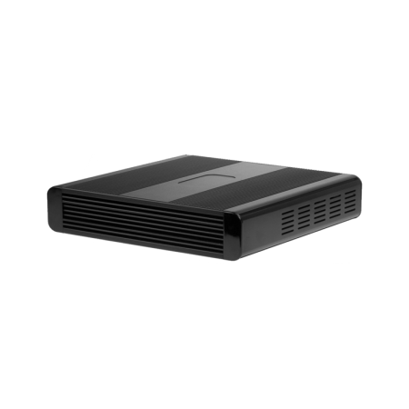
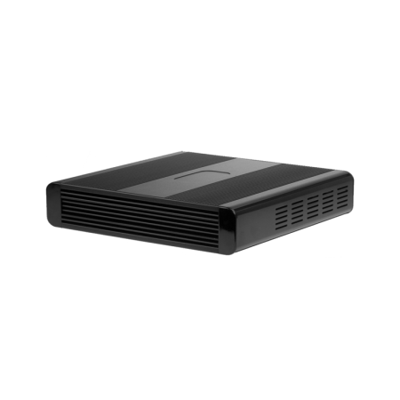

A web appliance is a connected device dedicated to running a single web application.
"A connected world where technology is seamlessly woven into the spaces around us and improves the lives of those who use it."
"Create exceptional user experiences built on the open web."
Krellian was originally conceived by Ben Francis in 2007 under the SPEED entrepreneurship programme at the University of Birmingham, with research and development in the area of "web appliances". It then traded as a consultancy from 2011, working with the Mozilla Corporation on Firefox OS and sponsoring the Webian open source project. Krellian Ltd. was incorporated in 2020 following enrollment in YCombinator's Startup School and the High Potential Startups programme in the North East of England.